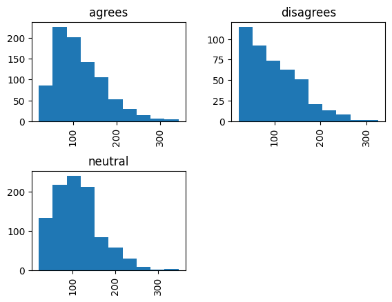
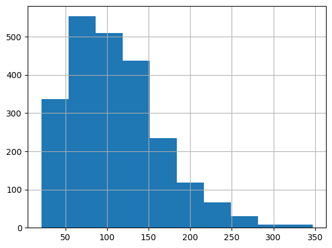

RANDOM_SEED = 2306406Opening data
import pandas as pd
url = "https://raw.githubusercontent.com/yiweiluo/GWStance/refs/heads/master/3_stance_detection/1_MTurk/full_annotations.tsv"
df_raw = pd.read_csv(url, sep = "\t") # Careful here, this document is a tsv (separator="\t" and not a csv (separator = ",")
df_raw.head()| Unnamed: 0 | MACE_pred | av_rating | sentence | worker_0 | worker_1 | worker_2 | worker_3 | worker_4 | worker_5 | worker_6 | worker_7 | round | batch | sent_id | disagree | agree | neutral | |
|---|---|---|---|---|---|---|---|---|---|---|---|---|---|---|---|---|---|---|
| 0 | 0 | disagrees | -1.000 | Global warming is a hoax. | disagrees | disagrees | disagrees | disagrees | disagrees | disagrees | disagrees | disagrees | 1 | 0 | s0 | NaN | NaN | NaN |
| 1 | 1 | neutral | 0.375 | Alarming levels of sea level rise are predicte... | neutral | neutral | neutral | agrees | agrees | neutral | neutral | agrees | 1 | 0 | s1 | NaN | NaN | NaN |
| 2 | 2 | neutral | 0.000 | Over the past several years, the United States... | neutral | neutral | neutral | neutral | neutral | neutral | neutral | neutral | 1 | 0 | s2 | NaN | NaN | NaN |
| 3 | 3 | agrees | 1.000 | Global warming is happening and it will be dan... | agrees | agrees | agrees | agrees | agrees | agrees | agrees | agrees | 1 | 0 | s3 | NaN | NaN | NaN |
| 4 | 4 | neutral | 0.000 | Some icebergs are cute. | neutral | neutral | neutral | neutral | neutral | neutral | neutral | neutral | 1 | 0 | s4 | NaN | NaN | NaN |
df = df_raw.loc[:,["sent_id", "sentence", "MACE_pred", "av_rating"]]
df = df.rename(columns={"MACE_pred" : "label_text"}) # Rename MACE_pred for conveniencydf.groupby(["label_text"]).size()label_text
agrees 871
disagrees 441
neutral 988
dtype: int64df["sentence-len"] = df["sentence"].apply(len)
df.hist(column = "sentence-len", by="label_text")
df.groupby("label_text")["sentence-len"].describe()| count | mean | std | min | 25% | 50% | 75% | max | |
|---|---|---|---|---|---|---|---|---|
| label_text | ||||||||
| agrees | 871.0 | 114.910448 | 56.008241 | 22.0 | 77.0 | 100.0 | 148.0 | 342.0 |
| disagrees | 441.0 | 98.090703 | 59.093654 | 22.0 | 51.0 | 86.0 | 134.0 | 325.0 |
| neutral | 988.0 | 110.731781 | 54.436786 | 21.0 | 72.0 | 104.0 | 148.0 | 347.0 |

df["sentence-len"].hist()
df["sentence-len"].describe()count 2300.000000
mean 109.890435
std 56.251317
min 21.000000
25% 70.000000
50% 100.000000
75% 145.000000
max 347.000000
Name: sentence-len, dtype: float64
Preprocessing data
def preprocess_text(text: str):
if not(isinstance(text, str)):
return pd.NA
return (
text
.replace("’", "'")
.replace("``", '"')
.replace("''", '"')
.replace(" ,", ",")
.replace(" .", ".")
.replace(" !", "!")
.replace(" ?", "?")
.replace(" :", ":")
.replace(" 's", "'s")
)
df["sentence-preprocessed"] = df["sentence"].apply(preprocess_text)df.groupby("sentence-preprocessed").size().value_counts()1 2032
2 9
50 5
Name: count, dtype: int64df_no_duplicates = df.loc[~df["sent_id"].str.startswith("s"), :]
df_no_duplicates.groupby("sentence-preprocessed").size().value_counts()1 2032
2 9
Name: count, dtype: int64df_concensus = df_no_duplicates.groupby("sentence-preprocessed")["label_text"].agg(concensus = lambda X : len(set(X)) == 1)
df_concensus[df_concensus["concensus"] == False]| concensus | |
|---|---|
| sentence-preprocessed | |
| We need to get rid of fossil fuel subsidies now. | False |
df_no_duplicates = df_no_duplicates.loc[
df_no_duplicates["sentence-preprocessed"] != "We need to get rid of fossil fuel subsidies now.",
:
]
df_no_duplicates = df_no_duplicates.drop_duplicates("sentence-preprocessed")from Levenshtein import distance as lev_distance
threshold = 10
# Dont run, it's annoyingly long
# with open("Levenshtein-duplicates.txt", "w") as file:
# file.write("")
# for i in range(len(df_no_duplicates)):
# for j in range(i + 1, len(df_no_duplicates)):
# s1 = df_no_duplicates.iloc[i]["sentence-preprocessed"]
# s2 = df_no_duplicates.iloc[j]["sentence-preprocessed"]
# d = lev_distance(s1, s2)
# if d < threshold:
# with open("Levenshtein-duplicates.txt", "a") as file:
# file.write(f"{d} : {s1} || {s2}\n")last_duplicates = [
("There is no solid evidence of global warming.","There is not solid evidence of global warming."),
("Balance of evidence suggests a discernible human influence on global climate.","The balance of evidence suggests a discernible human influence on global climate."),
("The alleged “ consensus ” behind the dangers of anthropogenic global warming is not nearly as settled among climate scientists as people imagine.","The alleged â consensus â behind the dangers of anthropogenic global warming is not nearly as settled among climate scientists as people imagine."),
("Rising global temperatures during the 19th and 20th centuries may be linked to greater plant photosynthesis.","Rising global temperatures during the 19th and 20th centuries could be linked to greater plant photosynthesis."),
("Climate change will continue to affect all types of weather phenomena and subsequently impact increasingly urbanised areas.","Climate change will continue to affect all types of weather phenomena and subsequently impact increasingly urbanized areas."),
]
for (s1, s2) in last_duplicates:
lab_s1 = df_no_duplicates.loc[df_no_duplicates["sentence"] == s1, "label_text"]
lab_s2 = df_no_duplicates.loc[df_no_duplicates["sentence"] == s2, "label_text"]
if lab_s1.item() == lab_s2.item() :
df_no_duplicates.drop(index = lab_s2.index)
else:
df_no_duplicates.drop(index = [*lab_s1.index, *lab_s2.index])import numpy as np
# Create splits
N = len(df_no_duplicates)
N_train = int(N * 0.7)
N_train_eval = int(N * 0.1)
N_test = int(N * 0.1)
N_final_eval = N - N_train - N_train_eval - N_test
assert N_final_eval > 0
indices = df_no_duplicates.index.to_series()
indices_train = (
indices
.sample(n = N_train, random_state=RANDOM_SEED)
)
indices_train_eval = (
indices
.drop(index=indices_train.index)
.sample(n = N_train_eval, random_state=RANDOM_SEED)
)
indices_test = (
indices
.drop(index=[*indices_train.index, *indices_train_eval.index])
.sample(n = N_train_eval, random_state=RANDOM_SEED)
)
indices_final_test = (
indices
.drop(index = [*indices_train, *indices_train_eval,*indices_test])
)df_split = (
pd.concat({
"train" : df_no_duplicates.loc[indices_train , :],
"train_eval" : df_no_duplicates.loc[indices_train_eval , :],
"test" : df_no_duplicates.loc[indices_test , :],
"final_test" : df_no_duplicates.loc[indices_final_test , :],
})
.reset_index()
.drop(columns=["level_1"])
.rename(columns = {"level_0": "split"})
)
df_split.to_csv("./data/GWStance_preprocessed.csv", index = False)df_split| split | sent_id | sentence | label_text | av_rating | sentence-len | sentence-preprocessed | |
|---|---|---|---|---|---|---|---|
| 0 | train | t4 | There is a definite declining trend in Arctic ... | agrees | 0.500 | 54 | There is a definite declining trend in Arctic ... |
| 1 | train | t38 | Human-made climate change is a real and urgent... | agrees | 0.750 | 138 | Human-made climate change is a real and urgent... |
| 2 | train | t8 | I can tell you that a lot of what happens — ... | agrees | 0.875 | 216 | I can tell you that a lot of what happens — ... |
| 3 | train | t42 | It is the third time in 40 years in which warm... | neutral | -0.250 | 73 | It is the third time in 40 years in which warm... |
| 4 | train | t18 | A runaway greenhouse effect on Venus led to te... | neutral | 0.125 | 81 | A runaway greenhouse effect on Venus led to te... |
| ... | ... | ... | ... | ... | ... | ... | ... |
| 2035 | final_test | t17 | No one can come to Davos anymore and not under... | neutral | -0.125 | 68 | No one can come to Davos anymore and not under... |
| 2036 | final_test | t18 | The climate emergency is the result of our eco... | agrees | 0.500 | 59 | The climate emergency is the result of our eco... |
| 2037 | final_test | t19 | Some glaciers melt while others grow and it ha... | neutral | -0.250 | 81 | Some glaciers melt while others grow and it ha... |
| 2038 | final_test | t29 | The United States would still maintain a voice... | neutral | 0.125 | 94 | The United States would still maintain a voice... |
| 2039 | final_test | t31 | The global warming scare is a massive hoax. | disagrees | -1.000 | 43 | The global warming scare is a massive hoax. |
2040 rows × 7 columns
Loading model
from transformers import AutoModelForSequenceClassification
labels = list(df_split["label_text"].unique())
num_labels = len(labels)
id2label = {id:label for id, label in enumerate(labels)}
label2id = {label:id for id, label in enumerate(labels)}
MODEL_NAME = "google-bert/bert-base-uncased"
model = AutoModelForSequenceClassification.from_pretrained(
MODEL_NAME,
num_labels=num_labels,
id2label=id2label,
label2id=label2id,
).to(device="cpu")/opt/miniconda3/envs/encoder-tuto/lib/python3.11/site-packages/tqdm/auto.py:21: TqdmWarning: IProgress not found. Please update jupyter and ipywidgets. See https://ipywidgets.readthedocs.io/en/stable/user_install.html
from .autonotebook import tqdm as notebook_tqdm
Some weights of BertForSequenceClassification were not initialized from the model checkpoint at google-bert/bert-base-uncased and are newly initialized: ['classifier.bias', 'classifier.weight']
You should probably TRAIN this model on a down-stream task to be able to use it for predictions and inference.print(model)BertForSequenceClassification(
(bert): BertModel(
(embeddings): BertEmbeddings(
(word_embeddings): Embedding(30522, 768, padding_idx=0)
(position_embeddings): Embedding(512, 768)
(token_type_embeddings): Embedding(2, 768)
(LayerNorm): LayerNorm((768,), eps=1e-12, elementwise_affine=True)
(dropout): Dropout(p=0.1, inplace=False)
)
(encoder): BertEncoder(
(layer): ModuleList(
(0-11): 12 x BertLayer(
(attention): BertAttention(
(self): BertSdpaSelfAttention(
(query): Linear(in_features=768, out_features=768, bias=True)
(key): Linear(in_features=768, out_features=768, bias=True)
(value): Linear(in_features=768, out_features=768, bias=True)
(dropout): Dropout(p=0.1, inplace=False)
)
(output): BertSelfOutput(
(dense): Linear(in_features=768, out_features=768, bias=True)
(LayerNorm): LayerNorm((768,), eps=1e-12, elementwise_affine=True)
(dropout): Dropout(p=0.1, inplace=False)
)
)
(intermediate): BertIntermediate(
(dense): Linear(in_features=768, out_features=3072, bias=True)
(intermediate_act_fn): GELUActivation()
)
(output): BertOutput(
(dense): Linear(in_features=3072, out_features=768, bias=True)
(LayerNorm): LayerNorm((768,), eps=1e-12, elementwise_affine=True)
(dropout): Dropout(p=0.1, inplace=False)
)
)
)
)
(pooler): BertPooler(
(dense): Linear(in_features=768, out_features=768, bias=True)
(activation): Tanh()
)
)
(dropout): Dropout(p=0.1, inplace=False)
(classifier): Linear(in_features=768, out_features=3, bias=True)
)from transformers import AutoConfig
print(AutoConfig.from_pretrained(MODEL_NAME))BertConfig {
"architectures": [
"BertForMaskedLM"
],
"attention_probs_dropout_prob": 0.1,
"classifier_dropout": null,
"gradient_checkpointing": false,
"hidden_act": "gelu",
"hidden_dropout_prob": 0.1,
"hidden_size": 768,
"initializer_range": 0.02,
"intermediate_size": 3072,
"layer_norm_eps": 1e-12,
"max_position_embeddings": 512,
"model_type": "bert",
"num_attention_heads": 12,
"num_hidden_layers": 12,
"pad_token_id": 0,
"position_embedding_type": "absolute",
"transformers_version": "4.52.4",
"type_vocab_size": 2,
"use_cache": true,
"vocab_size": 30522
}
Tokenize data
from transformers import AutoTokenizer
tokenizer = AutoTokenizer.from_pretrained(MODEL_NAME)from datasets import DatasetDict, Dataset
from torch import Tensor
# Create a dataset from the splits we created before
grouped_ds_split = df_split.groupby("split")
dsd = DatasetDict({
split :(
Dataset
.from_pandas(grouped_ds_split.get_group(split))
.with_format("torch", device="cpu")#, dtype=int)
)
for split in ["train", "train_eval", "test", "final_test"]
})
tokenizer_parameters = {
"truncation":True,
"padding":"max_length",
"max_length":400,
"return_tensors":"pt"
}
def preprocess_dataset(row: dict):
tokenized_entry = tokenizer(row["sentence-preprocessed"], **tokenizer_parameters)
id_label = int(label2id[row["label_text"]])
id_label_as_tensor = Tensor([int(i == id_label) for i in range(num_labels)])
return {
**row.copy(),
"labels": id_label_as_tensor,
"attention_mask" : tokenized_entry["attention_mask"].reshape(-1),
"input_ids" : tokenized_entry["input_ids"].reshape(-1)
}
dsd = dsd.map(preprocess_dataset, batch_size=32)
dsdMap: 0%| | 0/1428 [00:00<?, ? examples/s]Map: 100%|██████████| 1428/1428 [00:00<00:00, 3045.39 examples/s]
Map: 100%|██████████| 204/204 [00:00<00:00, 2958.24 examples/s]
Map: 100%|██████████| 204/204 [00:00<00:00, 3000.79 examples/s]
Map: 100%|██████████| 204/204 [00:00<00:00, 2951.38 examples/s]DatasetDict({
train: Dataset({
features: ['split', 'sent_id', 'sentence', 'label_text', 'av_rating', 'sentence-len', 'sentence-preprocessed', 'labels', 'attention_mask', 'input_ids'],
num_rows: 1428
})
train_eval: Dataset({
features: ['split', 'sent_id', 'sentence', 'label_text', 'av_rating', 'sentence-len', 'sentence-preprocessed', 'labels', 'attention_mask', 'input_ids'],
num_rows: 204
})
test: Dataset({
features: ['split', 'sent_id', 'sentence', 'label_text', 'av_rating', 'sentence-len', 'sentence-preprocessed', 'labels', 'attention_mask', 'input_ids'],
num_rows: 204
})
final_test: Dataset({
features: ['split', 'sent_id', 'sentence', 'label_text', 'av_rating', 'sentence-len', 'sentence-preprocessed', 'labels', 'attention_mask', 'input_ids'],
num_rows: 204
})
})dsd.save_to_disk("./outputs/dataset-dict")Saving the dataset (1/1 shards): 100%|██████████| 1428/1428 [00:00<00:00, 140772.94 examples/s]
Saving the dataset (1/1 shards): 100%|██████████| 204/204 [00:00<00:00, 37063.07 examples/s]
Saving the dataset (1/1 shards): 100%|██████████| 204/204 [00:00<00:00, 36695.89 examples/s]
Saving the dataset (1/1 shards): 100%|██████████| 204/204 [00:00<00:00, 45372.68 examples/s]from datasets import load_from_disk
dsd = load_from_disk("./outputs/dataset-dict")
for split in dsd:
dsd[split] = dsd[split].with_format("torch", device="cpu")import datasets
datasets.__version__'4.5.0'for split in dsd:
dsd[split] = dsd[split].with_format("torch", device="cpu")Understand the ins and outs of the pipeline
entry = [
"Hello World",
"This is a second query"
]
tokenizer_parameters = {
"truncation":True,
"padding":"max_length",
"max_length":400,
"return_tensors":"pt"
}
model_input = tokenizer(entry,**tokenizer_parameters)
base_model_output = model.base_model(**model_input)
classif_model_output = model(**model_input)
print(f'''
# model input keys: {', '.join(model_input)}
model input shape (pytorch tensor): {model_input["input_ids"].shape}
base model output keys: {', '.join(base_model_output)}
base model output last_hidden_state shape (pytorch tensor): {base_model_output.last_hidden_state.shape}
classification model output key: {', '.join(classif_model_output)}
classification model output logits shape (pytorch tensor): {classif_model_output.logits.shape}
''')Setup training arguments
from transformers import TrainingArguments, Trainer, DataCollatorWithPadding
training_arguments = TrainingArguments(
# Hyperparameters
# num_train_epochs = 5,
num_train_epochs = 7,
learning_rate = 5e-5,
weight_decay = 0.0,
warmup_ratio = 0.0,
optim = "adamw_torch_fused",
# Second order hyperparameters
per_device_train_batch_size = 4,
per_device_eval_batch_size = 4,
gradient_accumulation_steps = 8,
# Pipe
output_dir = "./models/training",
overwrite_output_dir=True,
logging_strategy = "epoch",
# eval_strategy = "epoch",
eval_strategy = "steps",
eval_steps = 32,
save_strategy = "epoch",
# load_best_model_at_end = True,
# save_total_limit = 5 + 1,
disable_tqdm = False,
)dsd["train_eval"]["labels"]Launch training
from sklearn.metrics import f1_score, roc_auc_score, accuracy_score
from torch import Tensor
from torch.nn import Sigmoid
from transformers import EvalPrediction
import numpy as np
def multi_label_metrics(results_matrix, labels : Tensor, threshold : float = 0.5
) -> dict:
'''Taking a results matrix (batch_size x num_labels), the function (with a
threshold) associates labels to the results => y_pred
From this y_pred matrix, evaluate the f1_micro, roc_auc and accuracy metrics
'''
# first, apply sigmoid on predictions which are of shape (batch_size, num_labels)
sigmoid = Sigmoid()
probs = sigmoid(Tensor(results_matrix))
# next, use threshold to turn them into integer predictions
y_pred = np.zeros(probs.shape)
y_pred[np.where(probs >= threshold)] = 1
# finally, compute metrics
y_true = labels
f1_micro_average = f1_score(y_true=y_true, y_pred=y_pred, average='micro')
f1_macro_average = f1_score(y_true=y_true, y_pred=y_pred, average='macro')
roc_auc = roc_auc_score(y_true, y_pred, average = 'micro')
accuracy = accuracy_score(y_true, y_pred)
# return as dictionary
return {'f1_micro': f1_micro_average,
'f1_macro': f1_macro_average,
'roc_auc': roc_auc,
'accuracy': accuracy}
def compute_metrics(model_output):
if isinstance(model_output.predictions,tuple):
results_matrix = model_output.predictions[0]
else:
results_matrix = model_output.predictions
metrics = multi_label_metrics(results_matrix=results_matrix,
labels=model_output.label_ids)
return metricstrainer = Trainer(
model = model,
args = training_arguments,
train_dataset=dsd["train"],
eval_dataset=dsd["train_eval"],
compute_metrics = compute_metrics
)
trainer.train()
# WARNING MODEL switches to mps need to handle thattraining_argumentsdsd["train"]["input_ids"][0]Predict the labels for the full dataset
dsd["test"]labels_true : list[int] = []
labels_pred : list[int] = []
for batch in dsd["test"].batch(batch_size=16, drop_last_batch=False):
model_input = {
'input_ids' : batch['input_ids'],
'attention_mask' : batch['attention_mask']
}
logits : np.ndarray = model(**model_input).logits.detach().numpy()
batch_of_true_label = [id2label[np.argmax(row).item()] for row in batch["labels"]]
labels_true.extend(batch_of_true_label)
batch_of_pred_label = [id2label[np.argmax(row).item()] for row in logits]
labels_pred.extend(batch_of_pred_label)
(
pd.DataFrame({
"predict" : labels_pred,
"gold_standard": labels_true
})
.to_csv("./outputs/prediction.csv", index = False)
)Evaluate performance
from sklearn.metrics import classification_report
results = pd.read_csv("./outputs/prediction.csv")
print(classification_report(y_true = results["gold_standard"], y_pred = results["predict"]))Read the learning curve
import json
with open("./models/training/trainer_state.json", "r") as file: # MODIFY !!!
training_state = json.load(file)
loss = []
for log in training_state ["log_history"]:
step = log["step"]
if "loss" in log:
loss += [{"step": step, "loss": log["loss"], "split": "train"}]
elif "eval_loss" in log:
loss += [{"step": step, "loss": log["eval_loss"], "split": "train-eval"}]
else:
# thweird
print(log)
loss = pd.DataFrame(loss)import plotly.express as px
px.line(loss, x = "step", y = "loss", color = "split") Unable to display output for mime type(s): application/vnd.plotly.v1+json